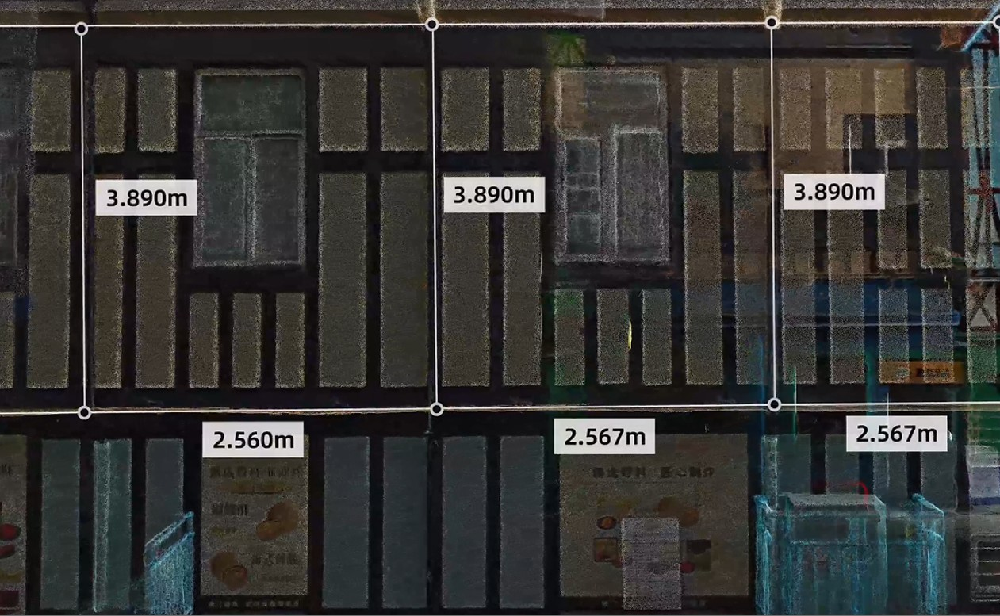

The Architecture, Engineering, Construction (AEC), manufacturing, and infrastructure industries are rapidly embracing Digital Twins to improve planning, construction, maintenance, and asset management. At the core of every digital twin lies one critical component — reality capture.
For years, laser scanning and LiDAR have produced highly accurate point clouds, while mesh models have powered visualization and simulations. Today, a new technology called Gaussian Splatting is reshaping the way we capture, visualize, and interact with real-world environments.
But what exactly are these technologies? How do they differ? And could Gaussian Splatting become the future of Digital Twins? Let's explore.
What is a Digital Twin?
A Digital Twin is a virtual representation of a physical asset that mirrors its geometry, appearance, and operational data. Unlike traditional 3D models, digital twins continuously evolve using real-world information collected from sensors, IoT devices, laser scanners, drones, and BIM models.
Applications include:
- Smart Cities
- Building Information Modeling (BIM)
- Infrastructure Management
- Facility Management
- Manufacturing
- Industrial Plants
- Oil & Gas Facilities
- Railways
- Airports
- Heritage Documentation
The quality of a digital twin depends heavily on how accurately reality is captured.
Point Clouds: The Foundation of Reality Capture
A Point Cloud is a collection of millions — or even billions — of XYZ coordinate points captured using terrestrial laser scanners, mobile mapping systems, drones, or LiDAR sensors.
Each point represents an exact location in 3D space, and many scanners also capture RGB color and intensity values.
Advantages
- Survey-grade accuracy
- Ideal for Scan-to-BIM workflows
- Excellent for measurements and clash detection
- Suitable for engineering documentation
- Maintains real-world geometry
Limitations
- Massive file sizes
- Difficult for non-technical users to interpret
- Limited realism
- Requires specialized software
- Processing can be computationally intensive
Point clouds remain the industry standard for engineering and BIM because they preserve precise measurements. Modern handheld SLAM scanners such as the XGRIDS Lixel K2, available in India through Sentra's laser scanner range, now capture survey-grade point clouds in a single walk-through — without tripods or ground control points.
Mesh Models: Creating Realistic Geometry
A Mesh converts point clouds into connected surfaces using polygons (usually triangles). Instead of billions of individual points, the software creates continuous surfaces that represent walls, roads, bridges, terrain, pipelines, machinery, and other objects.
Meshes are commonly generated using:
- Photogrammetry
- LiDAR
- Structured Light Scanning
- Reality Capture Software
Advantages
- Realistic surfaces
- Smaller files than raw point clouds
- Suitable for gaming and visualization
- Better for rendering and animations
- Supports texture mapping
Limitations
- Some geometric accuracy is lost during reconstruction
- Processing large environments is time-consuming
- Surface artifacts can occur in complex scenes
- Editing is often difficult
Meshes are excellent for visualization but may not retain the precision required for engineering-grade BIM.
Gaussian Splatting: The Next Generation of Reality Capture
Introduced in recent years, Gaussian Splatting represents 3D scenes using millions of tiny mathematical Gaussian primitives instead of points or polygons. Rather than reconstructing geometry with triangles, Gaussian Splatting models how light interacts with a scene, creating highly realistic renderings while maintaining interactive performance.
The result is an immersive, photorealistic experience that closely resembles the real world. Unlike traditional meshes, Gaussian Splatting preserves fine visual details such as reflections, vegetation, cables, machinery, and textured surfaces with impressive efficiency.

Mesh vs Point Cloud vs Gaussian Splatting
| Feature | Point Cloud | Mesh | Gaussian Splatting |
|---|---|---|---|
| Accuracy | ★★★★★ | ★★★★☆ | ★★★★☆ |
| Visual Quality | ★★☆☆☆ | ★★★★☆ | ★★★★★ |
| Measurements | Excellent | Good | Limited |
| BIM Modeling | Excellent | Good | Emerging |
| File Size | Very Large | Medium | Efficient Rendering |
| Processing Speed | Moderate | Slow | Fast Rendering |
| Engineering Use | Excellent | Good | Developing |
| Digital Twin Visualization | Moderate | Good | Outstanding |
| Web Streaming | Difficult | Moderate | Excellent |
| Photorealism | Low | High | Exceptional |
Why Gaussian Splatting is Generating Excitement
Gaussian Splatting addresses one of the biggest challenges in digital twins: delivering high-quality visual experiences without sacrificing performance. Key benefits include:
- Photorealistic Visualization — the technology reproduces lighting, textures, and reflections with remarkable realism.
- Faster Rendering — scenes containing millions of Gaussian splats can be rendered interactively on modern GPUs.
- Reduced Storage — compared to dense meshes and massive point clouds, Gaussian Splatting can represent scenes more efficiently for visualization.
- Better Remote Collaboration — large industrial sites can be streamed over the web with smooth navigation, enabling remote inspections and stakeholder reviews.
- Enhanced Client Communication — non-technical stakeholders often find photorealistic digital twins easier to understand than raw point clouds.
Will Gaussian Splatting Replace Point Clouds?
The short answer is no — not entirely. Point clouds provide precise geometric measurements that engineers rely on for:
- Scan-to-BIM
- CAD modeling
- Quality assurance
- Construction verification
- Structural analysis
- Dimensional inspections
Gaussian Splatting, on the other hand, excels at:
- Virtual walkthroughs
- Remote inspections
- Asset visualization
- Marketing presentations
- Facility management
- Immersive digital twins
Rather than replacing point clouds, Gaussian Splatting complements them. A practical workflow may involve:
- Capture reality using laser scanners and LiDAR.
- Generate an accurate point cloud.
- Create BIM or CAD models for engineering.
- Produce Gaussian Splatting scenes for immersive visualization and collaboration.
This hybrid approach combines measurement-grade accuracy with highly realistic visual experiences.
Capture point clouds and native 3D Gaussian Splats in a single scan with the XGRIDS range — Sentra is the official India reseller.
Explore Laser ScannersThe Impact on the BIM Industry
Gaussian Splatting is poised to transform several aspects of BIM and digital engineering:
Faster Design Reviews — stakeholders can explore photorealistic environments without requiring specialized BIM software.
Improved Facility Management — operations teams can navigate realistic digital replicas to locate equipment and understand asset conditions.
Better Client Presentations — owners and investors can experience projects through immersive, true-to-life visualizations.
Digital Twin Platforms — future platforms are likely to integrate BIM models, point clouds, IoT sensor data, GIS information, and Gaussian Splatting scenes into a unified environment for decision-making.
Enhanced Training — workers can practice maintenance procedures within realistic digital environments before entering the field.
Challenges Ahead
Despite its promise, Gaussian Splatting still faces several hurdles:
- Limited support in mainstream BIM software.
- Not designed for precise engineering measurements.
- Requires powerful GPU hardware for creation.
- Lacks mature editing workflows.
- Standards and interoperability are still evolving.
As the ecosystem matures, broader adoption is expected across AEC, infrastructure, and industrial sectors.
The Future of Reality Capture
The future is not about choosing one technology over another — it is about combining their strengths. Point Clouds deliver unmatched measurement accuracy. Mesh Models provide structured geometry for simulations and rendering. Gaussian Splatting introduces a new level of realism and accessibility for visualization and collaboration.
As hardware, AI, and rendering technologies continue to evolve, the next generation of digital twins will seamlessly integrate all three, creating richer, smarter, and more interactive representations of the physical world.
Organizations that adopt this hybrid approach will be better equipped to accelerate project delivery, improve stakeholder communication, and unlock the full value of reality capture.
Conclusion
Digital Twins are becoming the backbone of modern engineering, construction, and asset management. While point clouds remain indispensable for precision, meshes continue to support modeling and simulations, and Gaussian Splatting is redefining how we experience and share digital environments.
For organizations investing in laser scanning, Scan-to-BIM, LiDAR, and Digital Twin solutions, understanding these technologies is key to building future-ready workflows. Rather than competing, Point Clouds, Meshes, and Gaussian Splatting will work together to deliver more accurate, immersive, and intelligent digital twins.
Talk to Our Team